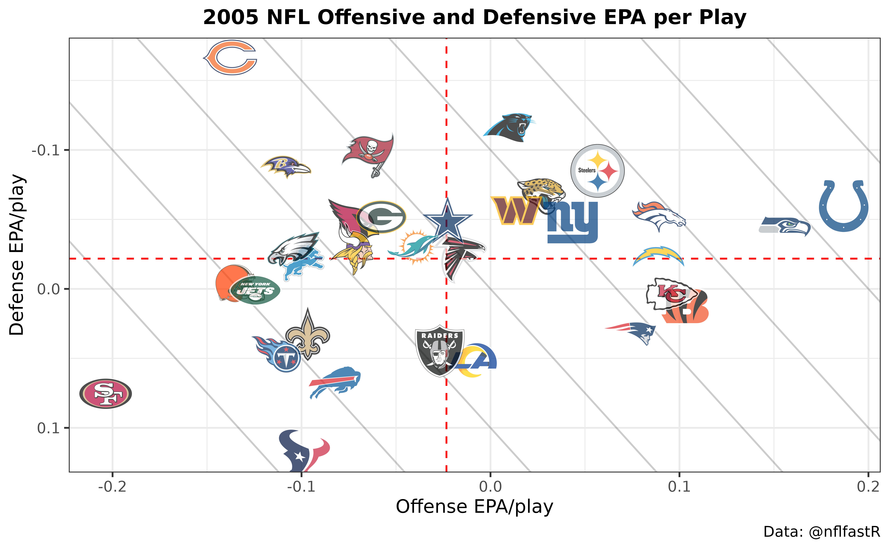

If you are new to R or are having trouble understanding the code in the below sections we highly recommend the nflfastR beginner’s guide in vignette("beginners_guide").
nflfastR comes with a set of functions to access NFL play-by-play data and team rosters. This section provides a brief introduction to the essential functions.
nflfastR processes and cleans up play-by-play data and adds variables through it’s models. Since some of these tasks are performed by separate functions, the easiest way to compute the complete nflfastR dataset is build_nflfastR_pbp(). The main input for that function is a set of game ids which can be accessed with fast_scraper_schedules(). The following code demonstrates how to build the nflfastR dataset for the Super Bowls of the 2017 - 2019 seasons.
library(nflfastR)
library(dplyr, warn.conflicts = FALSE)
ids <- nflfastR::fast_scraper_schedules(2017:2019) %>%
dplyr::filter(game_type == "SB") %>%
dplyr::pull(game_id)
pbp <- nflfastR::build_nflfastR_pbp(ids)
#> ── Build nflfastR Play-by-Play Data ───────────── nflfastR version 4.0.0.9006 ──
#> ● 13:18:35 | Start download of 3 games...
#> ✔ 13:18:38 | Download finished. Adding variables...
#> ✔ 13:18:38 | added game variables
#> ✔ 13:18:38 | added nflscrapR variables
#> ✔ 13:18:39 | added ep variables
#> ✔ 13:18:39 | added air_yac_ep variables
#> ✔ 13:18:40 | added wp variables
#> ✔ 13:18:40 | added air_yac_wp variables
#> ✔ 13:18:40 | added cp and cpoe
#> ✔ 13:18:40 | added fixed drive variables
#> ✔ 13:18:40 | added series variables
#> ● 13:18:40 | Cleaning up play-by-play...
#> ✔ 13:18:41 | Cleaning completed
#> ✔ 13:18:41 | added qb_epa
#> ● 13:18:41 | Computing xyac...
#> ✔ 13:18:44 | added xyac variables
#> ● 13:18:44 | Computing xpass...
#> ✔ 13:18:44 | added xpass and pass_oe
#> ✔ 13:18:44 | Decoding of player ids completed
#> ── DONE ────────────────────────────────────────────────────────────────────────In most cases, however, it is not necessary to use this function for individual games, because nflfastR provides both a data repository and two main play-by-play functions: load_pbp() and update_db(). We cover load_pbp() below, and please see Example 8: Using the built-in database function for how to work with the database function update_db().
The easiest way to access the data in the data repository is the new function load_pbp(). It can load multiple seasons directly into memory and supports the efficient data format qs. Loading all play-by-play data of the 2018-2020 seasons is as easy as
pbp <- nflfastR::load_pbp(2018:2020, qs = TRUE)If you don’t care to install qs for whatever reason, omit qs = TRUE from the above and it will work without it. Joining roster data to the play-by-play dataset is possible as well. The data can be accessed with the function fast_scraper_roster() and its application is demonstrated in Example 10: Working with roster and position data.
All examples listed below assume that the following two libraries are installed and loaded.
The functionality of nflscrapR can be duplicated by using fast_scraper(). This obtains the same information contained in nflscrapR (plus some extra) but much more quickly. To compare to nflscrapR, we use their data repository as the program no longer functions now that the NFL has taken down the old Gamecenter feed. Note that EP differs from nflscrapR as we use a newer era-adjusted model (more on this in this post on Open Source Football).
This example also uses the built-in function clean_pbp() to create a ‘name’ column for the primary player involved (the QB on pass play or ball-carrier on run play).
readr::read_csv(url("https://github.com/ryurko/nflscrapR-data/blob/master/play_by_play_data/regular_season/reg_pbp_2019.csv?raw=true")) %>%
dplyr::filter(home_team == "SF" & away_team == "SEA") %>%
dplyr::select(desc, play_type, ep, epa, home_wp) %>%
utils::head(5) %>%
knitr::kable(digits = 3)| desc | play_type | ep | epa | home_wp |
|---|---|---|---|---|
| J.Myers kicks 65 yards from SEA 35 to end zone, Touchback. | kickoff | 0.815 | 0.000 | NA |
| (15:00) T.Coleman left guard to SF 26 for 1 yard (J.Clowney). | run | 0.815 | -0.606 | 0.500 |
| (14:19) T.Coleman right tackle to SF 25 for -1 yards (P.Ford). | run | 0.209 | -1.146 | 0.485 |
| (13:45) (Shotgun) J.Garoppolo pass short middle to K.Bourne to SF 41 for 16 yards (J.Taylor). Caught at SF39. 2-yac | pass | -0.937 | 3.223 | 0.453 |
| (12:58) PENALTY on SEA-J.Reed, Encroachment, 5 yards, enforced at SF 41 - No Play. | no_play | 2.286 | 0.774 | 0.551 |
nflfastR::fast_scraper("2019_10_SEA_SF") %>%
nflfastR::clean_pbp() %>%
dplyr::select(desc, play_type, ep, epa, home_wp, name) %>%
utils::head(6) %>%
knitr::kable(digits = 3)| desc | play_type | ep | epa | home_wp | name |
|---|---|---|---|---|---|
| GAME | NA | NA | NA | NA | NA |
| 5-J.Myers kicks 65 yards from SEA 35 to end zone, Touchback. | kickoff | 1.474 | 0.000 | 0.546 | NA |
| (15:00) 26-T.Coleman left guard to SF 26 for 1 yard (90-J.Clowney). | run | 1.474 | -0.554 | 0.546 | T.Coleman |
| (14:19) 26-T.Coleman right tackle to SF 25 for -1 yards (97-P.Ford). | run | 0.920 | -0.814 | 0.528 | T.Coleman |
| (13:45) (Shotgun) 10-J.Garoppolo pass short middle to 84-K.Bourne to SF 41 for 16 yards (24-J.Taylor). Caught at SF39. 2-yac | pass | 0.107 | 2.427 | 0.498 | J.Garoppolo |
| (12:58) PENALTY on SEA-91-J.Reed, Encroachment, 5 yards, enforced at SF 41 - No Play. | no_play | 2.534 | 0.600 | 0.573 | NA |
This is a demonstration of nflfastR’s capabilities. While nflfastR can scrape a batch of games very quickly, please be respectful of Github’s servers and use the data repository which hosts all the scraped and cleaned data whenever possible. The only reason to ever actually use the scraper is if it’s in the middle of the season and we haven’t updated the repository with recent games (but it is automatically updated overnight every day).
# get list of some games from 2019
games_2019 <- nflfastR::fast_scraper_schedules(2019) %>%
utils::head(10) %>%
dplyr::pull(game_id)
tictoc::tic(glue::glue("{length(games_2019)} games with nflfastR:"))
f <- nflfastR::fast_scraper(games_2019)
tictoc::toc()
#> 10 games with nflfastR:: 11.961 sec elapsedLet’s look at CPOE leaders from the 2009 regular season.
As discussed above, nflfastR has a data repository for old seasons, so there’s no need to actually scrape them. Let’s use that here with the convenience function load_pbp() which fetches data from the repository (for non-R users, .csv and .parquet are also available in the data repository).
tictoc::tic("loading all games from 2009")
games_2009 <- nflfastR::load_pbp(2009) %>% dplyr::filter(season_type == "REG")
tictoc::toc()
#> loading all games from 2009: 4.629 sec elapsed
games_2009 %>%
dplyr::filter(!is.na(cpoe)) %>%
dplyr::group_by(passer_player_name) %>%
dplyr::summarize(cpoe = mean(cpoe), Atts = n()) %>%
dplyr::filter(Atts > 200) %>%
dplyr::arrange(-cpoe) %>%
utils::head(5) %>%
knitr::kable(digits = 1)| passer_player_name | cpoe | Atts |
|---|---|---|
| D.Brees | 7.5 | 509 |
| P.Rivers | 6.6 | 474 |
| P.Manning | 6.5 | 569 |
| B.Favre | 6.1 | 527 |
| B.Roethlisberger | 5.4 | 503 |
When working with nflfastR, drive results are automatically included. We use fixed_drive and fixed_drive_result since the NFL-provided information is a bit wonky. Let’s look at how much more likely teams were to score starting from 1st & 10 at their own 20 yard line in 2015 (the last year before touchbacks on kickoffs changed to the 25) than in 2000.
pbp <- nflfastR::load_pbp(c(2003, 2015), qs = TRUE)
out <- pbp %>%
dplyr::filter(season_type == "REG" & down == 1 & ydstogo == 10 & yardline_100 == 80) %>%
dplyr::mutate(drive_score = dplyr::if_else(fixed_drive_result %in% c("Touchdown", "Field goal"), 1, 0)) %>%
dplyr::group_by(season) %>%
dplyr::summarize(drive_score = mean(drive_score))
out %>%
knitr::kable(digits = 3)| season | drive_score |
|---|---|
| 2003 | 0.206 |
| 2015 | 0.305 |
So 20.6% of 1st & 10 plays from teams’ own 20 would see the drive end up in a score in 2003, compared to 30.5% in 2015. This has implications for Expected Points models (see this article).
Let’s build the NFL team tiers using offensive and defensive expected points added per play for the 2005 regular season. The logo urls of the espn logos are integrated into the ?teams_colors_logos data frame which is delivered with the package.
When using load_pbp(), the helper function clean_pbp() has already been run, which creates “rush” and “pass” columns that (a) properly count sacks and scrambles as pass plays and (b) properly include plays with penalties. Using this, we can keep only rush or pass plays.
library(ggimage)
pbp <- nflfastR::load_pbp(2005, qs = TRUE) %>%
dplyr::filter(season_type == "REG") %>%
dplyr::filter(!is.na(posteam) & (rush == 1 | pass == 1))
offense <- pbp %>%
dplyr::group_by(posteam) %>%
dplyr::summarise(off_epa = mean(epa, na.rm = TRUE))
defense <- pbp %>%
dplyr::group_by(defteam) %>%
dplyr::summarise(def_epa = mean(epa, na.rm = TRUE))
logos <- teams_colors_logos %>% dplyr::select(team_abbr, team_logo_espn)
offense %>%
dplyr::inner_join(defense, by = c("posteam" = "defteam")) %>%
dplyr::inner_join(logos, by = c("posteam" = "team_abbr")) %>%
ggplot2::ggplot(aes(x = off_epa, y = def_epa)) +
ggplot2::geom_abline(slope = -1.5, intercept = c(.4, .3, .2, .1, 0, -.1, -.2, -.3), alpha = .2) +
ggplot2::geom_hline(aes(yintercept = mean(off_epa)), color = "red", linetype = "dashed") +
ggplot2::geom_vline(aes(xintercept = mean(def_epa)), color = "red", linetype = "dashed") +
ggimage::geom_image(aes(image = team_logo_espn), size = 0.05, asp = 16 / 9) +
ggplot2::labs(
x = "Offense EPA/play",
y = "Defense EPA/play",
caption = "Data: @nflfastR",
title = "2005 NFL Offensive and Defensive EPA per Play"
) +
ggplot2::theme_bw() +
ggplot2::theme(
aspect.ratio = 9 / 16,
plot.title = ggplot2::element_text(size = 12, hjust = 0.5, face = "bold")
) +
ggplot2::scale_y_reverse()
We have provided a calculator for working with the Expected Points model. Here is an example of how to use it, looking for how the Expected Points on a drive beginning following a touchback has changed over time.
While I have put in 'SEA' for home_team and posteam, this only matters for figuring out whether the team with the ball is the home team (there’s no actual effect for given team; it would be the same no matter what team is supplied).
data <- tibble::tibble(
"season" = 1999:2019,
"home_team" = "SEA",
"posteam" = "SEA",
"roof" = "outdoors",
"half_seconds_remaining" = 1800,
"yardline_100" = c(rep(80, 17), rep(75, 4)),
"down" = 1,
"ydstogo" = 10,
"posteam_timeouts_remaining" = 3,
"defteam_timeouts_remaining" = 3
)
nflfastR::calculate_expected_points(data) %>%
dplyr::select(season, yardline_100, td_prob, ep) %>%
knitr::kable(digits = 2)| season | yardline_100 | td_prob | ep |
|---|---|---|---|
| 1999 | 80 | 0.33 | 0.64 |
| 2000 | 80 | 0.33 | 0.64 |
| 2001 | 80 | 0.33 | 0.64 |
| 2002 | 80 | 0.34 | 0.82 |
| 2003 | 80 | 0.34 | 0.82 |
| 2004 | 80 | 0.34 | 0.82 |
| 2005 | 80 | 0.34 | 0.82 |
| 2006 | 80 | 0.34 | 0.81 |
| 2007 | 80 | 0.34 | 0.81 |
| 2008 | 80 | 0.34 | 0.81 |
| 2009 | 80 | 0.34 | 0.81 |
| 2010 | 80 | 0.34 | 0.81 |
| 2011 | 80 | 0.34 | 0.81 |
| 2012 | 80 | 0.34 | 0.81 |
| 2013 | 80 | 0.34 | 0.81 |
| 2014 | 80 | 0.35 | 0.98 |
| 2015 | 80 | 0.35 | 0.98 |
| 2016 | 75 | 0.38 | 1.46 |
| 2017 | 75 | 0.38 | 1.46 |
| 2018 | 75 | 0.41 | 1.47 |
| 2019 | 75 | 0.41 | 1.47 |
Not surprisingly, offenses have become much more successful over time, with the kickoff touchback moving from the 20 to the 25 in 2016 providing an additional boost. Note that the td_prob in this example is the probability that the next score within the same half will be a touchdown scored by team with the ball, not the probability that the current drive will end in a touchdown (this is why the numbers are different from Example 4 above).
We could compare the most recent four years to the expectation for playing in a dome by inputting all the same things and changing the roof input:
data <- tibble::tibble(
"season" = 2016:2019,
"week" = 5,
"home_team" = "SEA",
"posteam" = "SEA",
"roof" = "dome",
"half_seconds_remaining" = 1800,
"yardline_100" = c(rep(75, 4)),
"down" = 1,
"ydstogo" = 10,
"posteam_timeouts_remaining" = 3,
"defteam_timeouts_remaining" = 3
)
nflfastR::calculate_expected_points(data) %>%
dplyr::select(season, yardline_100, td_prob, ep) %>%
knitr::kable(digits = 2)| season | yardline_100 | td_prob | ep |
|---|---|---|---|
| 2016 | 75 | 0.41 | 1.81 |
| 2017 | 75 | 0.41 | 1.81 |
| 2018 | 75 | 0.44 | 1.84 |
| 2019 | 75 | 0.44 | 1.84 |
So for 2018 and 2019, 1st & 10 from a home team’s own 25 yard line had higher EP in domes than at home, which is to be expected.
We have also provided a calculator for working with the win probability models. Here is an example of how to use it, looking for how the win probability to begin the game depends on the pre-game spread.
While I have put in 'SEA' for home_team and posteam, this only matters for figuring out whether the team with the ball is the home team (there’s no actual effect for given team; it would be the same no matter what team is supplied).
data <- tibble::tibble(
"receive_2h_ko" = 0,
"home_team" = "SEA",
"posteam" = "SEA",
"score_differential" = 0,
"half_seconds_remaining" = 1800,
"game_seconds_remaining" = 3600,
"spread_line" = c(1, 3, 4, 7, 14),
"down" = 1,
"ydstogo" = 10,
"yardline_100" = 75,
"posteam_timeouts_remaining" = 3,
"defteam_timeouts_remaining" = 3
)
nflfastR::calculate_win_probability(data) %>%
dplyr::select(spread_line, wp, vegas_wp) %>%
knitr::kable(digits = 2)| spread_line | wp | vegas_wp |
|---|---|---|
| 1 | 0.55 | 0.51 |
| 3 | 0.55 | 0.60 |
| 4 | 0.55 | 0.64 |
| 7 | 0.55 | 0.74 |
| 14 | 0.55 | 0.87 |
Not surprisingly, vegas_wp increases with the amount a team was coming into the game favored by.
If you’re comfortable using dplyr functions to manipulate and tidy data, you’re ready to use a database. Why should you use a database?
nflfastR makes it extremely easy to build a database and keep it updatedTo start, we need to install the two packages required for this that aren’t installed automatically when nflfastR installs: DBI and RSQLite (advanced users can use other types of databases, but this example will use SQLite. The if statements make sure the packages won’t be updated if they are already installed):
if (!require("DBI")) install.packages("DBI")
if (!require("RSQLite")) install.packages("RSQLite")As with always, you only need to install these once. They don’t need to be loaded to build the database because nflfastR knows how to use them, but we do need them later on when working with the database.
There’s exactly one function in nflfastR that works with databases: update_db(). Some notes:
update_db() with no arguments, it will build a SQLite database called pbp_db in your current working directory, with play-by-play data in a table called nflfastR_pbp.dbdir.dbname.tblname.force_rebuild = TRUE. This is primarily intended for the case when we update the play-by-play data in the data repo due to fixing a bug and you want to force the database to be wiped and updated.force_rebuild (e.g. force_rebuild = c(2019, 2020)).db_connection is intended for advanced users who want to use other DBI drivers, such as MariaDB, Postgres or odbc. Please note that dbdir and dbname are dropped when a db_connection is provided but the argument tblname will still be used to write the data table into the database.Let’s say I just want to dump a database into the current working directory. Here we go!
nflfastR::update_db()
#> ── Update nflfastR Play-by-Play Database ──────── nflfastR version 4.0.0.9006 ──
#> ℹ 13:19:44 | Can't find the data table 'nflfastR_pbp' in your database. Will load the play by play data from scratch.
#> ● 13:19:44 | Starting download of 22 seasons between 1999 and 2020...
#> ● 13:21:10 | Checking for missing completed games...
#> ℹ 13:21:12 | You have 5849 games and are missing 0.
#> ✔ 13:21:12 | Database update completed
#> ℹ 13:21:12 | Path to your db: './pbp_db'
#> ── DONE ────────────────────────────────────────────────────────────────────────This created a database in the current directory called pbp_db.
Wait, that’s it? That’s it! What if it’s partway through the season and you want to make sure all the new games are added to the database? What do you run? update_db()! (just make sure you’re in the directory the database is saved in or you supply the right file path)
nflfastR::update_db()
#> ── Update nflfastR Play-by-Play Database ──────── nflfastR version 4.0.0.9006 ──
#> ● 13:21:12 | Checking for missing completed games...
#> ℹ 13:21:14 | You have 5849 games and are missing 0.
#> ✔ 13:21:14 | Database update completed
#> ℹ 13:21:14 | Path to your db: '/Users/runner/work/nflfastR/nflfastR/vignettes/pbp_db'
#> ── DONE ────────────────────────────────────────────────────────────────────────If it’s partway through a season and you want to re-build a season to allow for data corrections from the NFL to propagate into your database, you can specify one season to be rebuilt:
nflfastR::update_db(force_rebuild = 2020)
#> ── Update nflfastR Play-by-Play Database ──────── nflfastR version 4.0.0.9006 ──
#> ● 13:21:14 | Purging 2020 season(s) from the data table 'nflfastR_pbp' in your connected database...
#> ● 13:21:16 | Starting download of the 2020 season(s)...
#> ● 13:21:19 | Checking for missing completed games...
#> ℹ 13:21:21 | You have 5849 games and are missing 0.
#> ✔ 13:21:21 | Database update completed
#> ℹ 13:21:21 | Path to your db: '/Users/runner/work/nflfastR/nflfastR/vignettes/pbp_db'
#> ── DONE ────────────────────────────────────────────────────────────────────────Now we can make a connection to the database. This is the only part that will look a little bit foreign, but all you need to know is where your database is located. If it’s in your current working directory, this will work:
connection <- DBI::dbConnect(RSQLite::SQLite(), "./pbp_db")
connection
#> <SQLiteConnection>
#> Path: /Users/runner/work/nflfastR/nflfastR/vignettes/pbp_db
#> Extensions: TRUEIt looks like nothing happened, but we now have a connection to the database. Now we’re ready to do stuff. If you aren’t familiar with databases, they’re organized around tables. Here’s how to see which tables are present in our database:
DBI::dbListTables(connection)
#> [1] "nflfastR_pbp"Since we went with the defaults, there’s a table called nflfastR_pbp. Another useful function is to see the fields (i.e., columns) in a table:
DBI::dbListFields(connection, "nflfastR_pbp") %>%
utils::head(10)
#> [1] "play_id" "game_id" "old_game_id" "home_team" "away_team"
#> [6] "season_type" "week" "posteam" "posteam_type" "defteam"This is the same list as the list of columns in nflfastR play-by-play. Notice we had to supply the name of the table above ("nflfastR_pbp").
With all that out of the way, there’s only a couple more things to learn. The main driver here is tbl, which helps get output with a specific table in a database:
pbp_db <- dplyr::tbl(connection, "nflfastR_pbp")And now, everything will magically just “work”: you can forget you’re even working with a database!
pbp_db %>%
dplyr::group_by(season) %>%
dplyr::summarize(n = dplyr::n())
#> # Source: lazy query [?? x 2]
#> # Database: sqlite 3.34.1
#> # [/Users/runner/work/nflfastR/nflfastR/vignettes/pbp_db]
#> season n
#> <int> <int>
#> 1 1999 46136
#> 2 2000 45492
#> 3 2001 45694
#> 4 2002 48085
#> 5 2003 47602
#> 6 2004 47470
#> 7 2005 47611
#> 8 2006 47134
#> 9 2007 47056
#> 10 2008 46712
#> # … with more rows
pbp_db %>%
dplyr::filter(rush == 1 | pass == 1, down <= 2, !is.na(epa), !is.na(posteam)) %>%
dplyr::group_by(pass) %>%
dplyr::summarize(mean_epa = mean(epa, na.rm = TRUE))
#> # Source: lazy query [?? x 2]
#> # Database: sqlite 3.34.1
#> # [/Users/runner/work/nflfastR/nflfastR/vignettes/pbp_db]
#> pass mean_epa
#> <dbl> <dbl>
#> 1 0 -0.0992
#> 2 1 0.0742So far, everything has stayed in the database. If you want to bring a query into memory, just use collect() at the end:
russ <- pbp_db %>%
dplyr::filter(name == "R.Wilson" & posteam == "SEA") %>%
dplyr::select(desc, epa) %>%
dplyr::collect()
russ
#> # A tibble: 6,446 x 2
#> desc epa
#> <chr> <dbl>
#> 1 (14:12) 3-R.Wilson pass short right to 18-S.Rice to SEA 34 for 9 yar… 1.13
#> 2 (12:53) 3-R.Wilson pass incomplete deep left to 18-S.Rice. PENALTY o… 2.68
#> 3 (11:25) (Shotgun) 3-R.Wilson pass incomplete short right to 18-S.Ric… -1.31
#> 4 (10:24) (Shotgun) 3-R.Wilson pass short left to 18-S.Rice to ARI 31 … 0.928
#> 5 (9:47) 3-R.Wilson scrambles right end ran ob at ARI 27 for 4 yards (… -0.0194
#> 6 (8:35) 3-R.Wilson pass incomplete short right to 18-S.Rice. -0.426
#> 7 (7:54) (Shotgun) 3-R.Wilson left end pushed ob at ARI 9 for 4 yards … -1.17
#> 8 (:27) 3-R.Wilson sacked at SEA 17 for -5 yards (51-P.Lenon). Penalty… -1.13
#> 9 (14:28) (Shotgun) 3-R.Wilson pass short right to 17-B.Edwards to SEA… 1.94
#> 10 (13:59) 3-R.Wilson pass incomplete deep left to 87-B.Obomanu. -0.453
#> # … with 6,436 more rowsSo we’ve searched through about 1 million rows of data across 300+ columns and only brought about 6450 rows and two columns into memory. Pretty neat! This is how I supply the data to the shiny apps on rbsdm.com without running out of memory on the server. Now there’s only one more thing to remember. When you’re finished doing what you need with the database:
DBI::dbDisconnect(connection)For more details on using a database with nflfastR, see Thomas Mock’s life-changing post here.
The variables in xyac are as follows:
xyac_epa: The expected value of EPA gained after the catch, starting from where the catch was made.xyac_success: The probability the play earns positive EPA (relative to where play started) based on where ball was caught.xyac_fd: Probability play earns a first down based on where the ball was caught.xyac_mean_yardage and xyac_median_yardage: Average and median expected yards after the catch based on where the ball was caught.Some other notes:
epa = air_epa + yac_epa, where air_epa is the EPA associated with a catch at the target location. If a receiver loses a fumble, it is removed from his yac_epa
air_epa + xyac_epa
yac_epa to xyac_epa, as in the example belowfirst_down to xyac_fd
Let’s create measures for EPA and first downs over expected in 2015:
nflfastR::load_pbp(2015, qs = TRUE) %>%
dplyr::group_by(receiver, receiver_id, posteam) %>%
dplyr::mutate(tgt = sum(complete_pass + incomplete_pass)) %>%
dplyr::filter(tgt >= 50) %>%
dplyr::filter(complete_pass == 1, air_yards < yardline_100, !is.na(xyac_epa)) %>%
dplyr::summarize(
epa_oe = mean(yac_epa - xyac_epa),
actual_fd = mean(first_down),
expected_fd = mean(xyac_fd),
fd_oe = mean(first_down - xyac_fd),
rec = dplyr::n()
) %>%
dplyr::ungroup() %>%
dplyr::select(receiver, posteam, actual_fd, expected_fd, fd_oe, epa_oe, rec) %>%
dplyr::arrange(-epa_oe) %>%
utils::head(10) %>%
knitr::kable(digits = 3)| receiver | posteam | actual_fd | expected_fd | fd_oe | epa_oe | rec |
|---|---|---|---|---|---|---|
| D.Johnson | ARI | 0.500 | 0.391 | 0.109 | 0.334 | 50 |
| J.White | NE | 0.489 | 0.434 | 0.055 | 0.264 | 47 |
| T.Ginn | CAR | 0.800 | 0.734 | 0.066 | 0.249 | 45 |
| D.Lewis | NE | 0.472 | 0.309 | 0.163 | 0.238 | 36 |
| L.Green | LAC | 0.629 | 0.526 | 0.103 | 0.216 | 35 |
| O.Beckham Jr. | NYG | 0.692 | 0.706 | -0.014 | 0.207 | 91 |
| G.Bernard | CIN | 0.373 | 0.289 | 0.083 | 0.204 | 51 |
| T.Riddick | DET | 0.400 | 0.304 | 0.096 | 0.203 | 80 |
| D.Woodhead | LAC | 0.468 | 0.354 | 0.114 | 0.172 | 77 |
| T.Lockett | SEA | 0.588 | 0.548 | 0.040 | 0.163 | 51 |
The presence of so many running backs on this list suggests that even though it takes into account target depth and pass direction, the model doesn’t do a great job capturing space. Alternatively, running backs might be better at generating yards after the catch since running with the football is their primary role.
At long last, there’s a way to merge the new play-by-play data with roster information. Use the function to get the rosters:
roster <- nflfastR::fast_scraper_roster(2019)Now let’s load play-by-play data from 2019:
games_2019 <- nflfastR::load_pbp(2019)Here is what the player IDs look like because nflfastR now automatically decodes IDs to look like the old format with GSIS IDs:
games_2019 %>%
dplyr::filter(rush == 1 | pass == 1, posteam == "SEA") %>%
dplyr::select(name, id)
#> # A tibble: 1,207 x 2
#> name id
#> <chr> <chr>
#> 1 C.Carson 00-0033594
#> 2 R.Wilson 00-0029263
#> 3 R.Wilson 00-0029263
#> 4 C.Carson 00-0033594
#> 5 R.Wilson 00-0029263
#> 6 C.Carson 00-0033594
#> 7 R.Wilson 00-0029263
#> 8 C.Carson 00-0033594
#> 9 R.Wilson 00-0029263
#> 10 R.Wilson 00-0029263
#> # … with 1,197 more rowsNow we’re ready to join to the roster data using these IDs:
joined <- games_2019 %>%
dplyr::filter(!is.na(receiver_id)) %>%
dplyr::select(posteam, season, desc, receiver, receiver_id, epa) %>%
dplyr::left_join(roster, by = c("receiver_id" = "gsis_id"))
# the real work is done, this just makes a table and has it look nice
joined %>%
dplyr::filter(position %in% c("WR", "TE", "RB")) %>%
dplyr::group_by(receiver_id, receiver, position) %>%
dplyr::summarize(tot_epa = sum(epa), n = n()) %>%
dplyr::arrange(-tot_epa) %>%
dplyr::ungroup() %>%
dplyr::group_by(position) %>%
dplyr::mutate(position_rank = 1:n()) %>%
dplyr::filter(position_rank <= 5) %>%
dplyr::rename(Pos_Rank = position_rank, Player = receiver, Pos = position, Tgt = n, EPA = tot_epa) %>%
dplyr::select(Player, Pos, Pos_Rank, Tgt, EPA) %>%
knitr::kable(digits = 0)| Player | Pos | Pos_Rank | Tgt | EPA |
|---|---|---|---|---|
| M.Thomas | WR | 1 | 199 | 105 |
| T.Kelce | TE | 1 | 179 | 100 |
| C.Godwin | WR | 2 | 123 | 87 |
| D.Adams | WR | 3 | 161 | 77 |
| T.Lockett | WR | 4 | 140 | 76 |
| J.Jones | WR | 5 | 164 | 72 |
| G.Kittle | TE | 2 | 129 | 56 |
| C.McCaffrey | RB | 1 | 148 | 52 |
| D.Waller | TE | 3 | 124 | 45 |
| A.Ekeler | RB | 2 | 113 | 43 |
| J.Cook | TE | 4 | 75 | 43 |
| Z.Ertz | TE | 5 | 147 | 42 |
| J.White | RB | 3 | 105 | 27 |
| D.Cook | RB | 4 | 77 | 26 |
| M.Ingram | RB | 5 | 33 | 22 |
Not surprisingly, all 5 of the top 5 WRs in terms of EPA added come in ahead of the top RB. Note that the number of targets won’t match official stats because we’re including plays with penalties.
The columns like name, passer, fantasy etc are nflfastR-created columns that mimic “real” football: i.e., excluding plays with spikes, counting scrambles and sacks as pass plays, etc. But if you’re trying to replicate official statistics – perhaps for fantasy purposes – use the *_player_name and *_player_id columns.
Let’s try to replicate this page of passing leaders.
nflfastR::load_pbp(2020) %>%
dplyr::filter(season_type == "REG", complete_pass == 1 | incomplete_pass == 1 | interception == 1, !is.na(down)) %>%
dplyr::group_by(passer_player_name, posteam) %>%
dplyr::summarize(
yards = sum(passing_yards, na.rm = T),
tds = sum(touchdown == 1 & td_team == posteam),
ints = sum(interception),
att = dplyr::n()
) %>%
dplyr::arrange(-yards) %>%
utils::head(10) %>%
knitr::kable(digits = 0)| passer_player_name | posteam | yards | tds | ints | att |
|---|---|---|---|---|---|
| D.Watson | HOU | 4823 | 33 | 7 | 544 |
| P.Mahomes | KC | 4740 | 38 | 6 | 588 |
| T.Brady | TB | 4633 | 40 | 12 | 610 |
| M.Ryan | ATL | 4581 | 26 | 11 | 626 |
| J.Allen | BUF | 4544 | 37 | 10 | 572 |
| J.Herbert | LAC | 4336 | 31 | 10 | 595 |
| A.Rodgers | GB | 4299 | 48 | 5 | 526 |
| K.Cousins | MIN | 4265 | 35 | 13 | 516 |
| R.Wilson | SEA | 4212 | 40 | 13 | 558 |
| P.Rivers | IND | 4169 | 24 | 11 | 543 |
These match the official stats on NFL.com (note the filter for season_type == "REG" since official stats only count regular season games). Note that we’re using passing_yards here because yards_gained is not equal to passing yards on plays with laterals.
While the above works, we’ve also provided a function that does this all for you: calculate_player_stats(). This function takes an nflfastR play-by-play dataframe as an input along with one other argument, weekly, which defaults to FALSE. When weekly is true, a week-by-week dataframe is returned (rather than an aggregate over the whole provided dataframe). Let’s again replicate the top 10 players in passing yards:
nflfastR::load_pbp(2020) %>%
dplyr::filter(season_type == "REG") %>%
nflfastR::calculate_player_stats() %>%
dplyr::arrange(-passing_yards) %>%
dplyr::select(player_name, recent_team, completions, attempts, passing_yards, passing_tds, interceptions) %>%
utils::head(10) %>%
knitr::kable(digits = 0)| player_name | recent_team | completions | attempts | passing_yards | passing_tds | interceptions |
|---|---|---|---|---|---|---|
| D.Watson | HOU | 382 | 544 | 4823 | 33 | 7 |
| P.Mahomes | KC | 390 | 588 | 4740 | 38 | 6 |
| T.Brady | TB | 401 | 610 | 4633 | 40 | 12 |
| M.Ryan | ATL | 407 | 626 | 4581 | 26 | 11 |
| J.Allen | BUF | 396 | 572 | 4544 | 37 | 10 |
| J.Herbert | LAC | 396 | 595 | 4336 | 31 | 10 |
| A.Rodgers | GB | 372 | 526 | 4299 | 48 | 5 |
| K.Cousins | MIN | 349 | 516 | 4265 | 35 | 13 |
| R.Wilson | SEA | 384 | 558 | 4212 | 40 | 13 |
| P.Rivers | IND | 369 | 543 | 4169 | 24 | 11 |
We can do the same for rush attempts to replicate the NFL leaderboard:
nflfastR::load_pbp(2020) %>%
dplyr::filter(season_type == "REG") %>%
nflfastR::calculate_player_stats() %>%
dplyr::arrange(-rushing_yards) %>%
dplyr::select(player_name, recent_team, carries, rushing_yards, rushing_tds, rushing_fumbles_lost) %>%
utils::head(10) %>%
knitr::kable(digits = 0)| player_name | recent_team | carries | rushing_yards | rushing_tds | rushing_fumbles_lost |
|---|---|---|---|---|---|
| D.Henry | TEN | 378 | 2027 | 17 | 2 |
| D.Cook | MIN | 312 | 1557 | 16 | 2 |
| J.Taylor | IND | 232 | 1169 | 11 | 1 |
| A.Jones | GB | 201 | 1104 | 9 | 0 |
| D.Montgomery | CHI | 247 | 1070 | 8 | 0 |
| J.Robinson | JAX | 240 | 1070 | 7 | 0 |
| N.Chubb | CLE | 190 | 1067 | 12 | 1 |
| J.Jacobs | LV | 273 | 1065 | 12 | 2 |
| L.Jackson | BAL | 159 | 1005 | 7 | 2 |
| M.Gordon | DEN | 215 | 986 | 9 | 2 |
Again, this matches up exactly.
What if we want total yards from scrimmage? We’ll demonstrate three methods here. The hardest way is to use the fantasy_player_name column, which is the rusher on rush plays and receiver on receiving plays:
nflfastR::load_pbp(2020) %>%
dplyr::filter(season_type == "REG", !is.na(down)) %>%
dplyr::group_by(fantasy_player_name, posteam) %>%
dplyr::summarize(
carries = sum(rush_attempt),
receptions = sum(complete_pass),
touches = sum(rush_attempt + complete_pass),
yards = sum(yards_gained),
tds = sum(touchdown == 1 & td_team == posteam)
) %>%
dplyr::arrange(-yards) %>%
utils::head(10) %>%
knitr::kable(digits = 0)| fantasy_player_name | posteam | carries | receptions | touches | yards | tds |
|---|---|---|---|---|---|---|
| D.Henry | TEN | 378 | 19 | 397 | 2141 | 17 |
| D.Cook | MIN | 312 | 44 | 356 | 1918 | 17 |
| A.Kamara | NO | 187 | 83 | 270 | 1688 | 21 |
| S.Diggs | BUF | 1 | 127 | 128 | 1536 | 8 |
| D.Montgomery | CHI | 247 | 54 | 301 | 1508 | 10 |
| J.Taylor | IND | 232 | 36 | 268 | 1468 | 12 |
| A.Jones | GB | 201 | 47 | 248 | 1459 | 11 |
| T.Kelce | KC | 0 | 105 | 105 | 1416 | 11 |
| J.Robinson | JAX | 240 | 49 | 289 | 1414 | 10 |
| D.Hopkins | ARI | 1 | 115 | 116 | 1408 | 6 |
Looking at the PFR scrimmage stats, these columns are an exact match.
But we could also just use calculate_player_stats() again:
nflfastR::load_pbp(2020) %>%
dplyr::filter(season_type == "REG") %>%
nflfastR::calculate_player_stats() %>%
dplyr::mutate(
yards = rushing_yards + receiving_yards,
touches = carries + receptions,
tds = rushing_tds + receiving_tds
) %>%
dplyr::arrange(-yards) %>%
dplyr::select(player_name, recent_team, carries, receptions, touches, yards, tds) %>%
utils::head(10) %>%
knitr::kable(digits = 0)| player_name | recent_team | carries | receptions | touches | yards | tds |
|---|---|---|---|---|---|---|
| D.Henry | TEN | 378 | 19 | 397 | 2141 | 17 |
| D.Cook | MIN | 312 | 44 | 356 | 1918 | 17 |
| A.Kamara | NO | 187 | 83 | 270 | 1688 | 21 |
| S.Diggs | BUF | 1 | 127 | 128 | 1536 | 8 |
| D.Montgomery | CHI | 247 | 54 | 301 | 1508 | 10 |
| J.Taylor | IND | 232 | 36 | 268 | 1468 | 12 |
| A.Jones | GB | 201 | 47 | 248 | 1459 | 11 |
| T.Kelce | KC | 0 | 105 | 105 | 1416 | 11 |
| J.Robinson | JAX | 240 | 49 | 289 | 1414 | 10 |
| D.Hopkins | ARI | 1 | 115 | 116 | 1408 | 6 |
And we get the same thing.
The third way is to use the load_player_stats() function, which loads a data frame of player-level stats for every week since 1999.
nflfastR::load_player_stats() %>%
dplyr::filter(season == 2020, week <= 17) %>%
dplyr::group_by(player_id) %>%
dplyr::summarize(
player_name = dplyr::first(player_name),
recent_team = dplyr::first(recent_team),
yards = sum(rushing_yards + receiving_yards),
touches = sum(carries + receptions),
carries = sum(carries),
receptions = sum(receptions),
tds = sum(rushing_tds + receiving_tds)
) %>%
dplyr::ungroup() %>%
dplyr::arrange(-yards) %>%
dplyr::select(player_name, recent_team, carries, receptions, touches, yards, tds) %>%
utils::head(10) %>%
knitr::kable(digits = 0)| player_name | recent_team | carries | receptions | touches | yards | tds |
|---|---|---|---|---|---|---|
| D.Henry | TEN | 378 | 19 | 397 | 2141 | 17 |
| D.Cook | MIN | 312 | 44 | 356 | 1918 | 17 |
| A.Kamara | NO | 187 | 83 | 270 | 1688 | 21 |
| S.Diggs | BUF | 1 | 127 | 128 | 1536 | 8 |
| D.Montgomery | CHI | 247 | 54 | 301 | 1508 | 10 |
| J.Taylor | IND | 232 | 36 | 268 | 1468 | 12 |
| A.Jones | GB | 201 | 47 | 248 | 1459 | 11 |
| T.Kelce | KC | 0 | 105 | 105 | 1416 | 11 |
| J.Robinson | JAX | 240 | 49 | 289 | 1414 | 10 |
| D.Hopkins | ARI | 1 | 115 | 116 | 1408 | 6 |
And again the output is identical.
Let’s calculate PPR fantasy points per game in the first 16 weeks of the season among wide receivers who appeared in more than 5 games.
nflfastR::load_pbp(2020) %>%
dplyr::filter(week <= 16) %>%
nflfastR::calculate_player_stats() %>%
dplyr::mutate(
ppg = fantasy_points_ppr / games
) %>%
filter(games > 5) %>%
# only keep the WRs
inner_join(
nflfastR::fast_scraper_roster(2020) %>% filter(position == "WR") %>% select(gsis_id),
by = c("player_id" = "gsis_id")
) %>%
dplyr::arrange(-ppg) %>%
dplyr::select(player_name, recent_team, games, fantasy_points_ppr, ppg) %>%
utils::head(10) %>%
knitr::kable(digits = 1)| player_name | recent_team | games | fantasy_points_ppr | ppg |
|---|---|---|---|---|
| D.Adams | GB | 13 | 341.8 | 26.3 |
| T.Hill | KC | 15 | 328.9 | 21.9 |
| S.Diggs | BUF | 15 | 314.0 | 20.9 |
| C.Ridley | ATL | 14 | 270.9 | 19.3 |
| D.Hopkins | ARI | 15 | 280.3 | 18.7 |
| D.Metcalf | SEA | 15 | 266.2 | 17.7 |
| K.Allen | LAC | 14 | 245.1 | 17.5 |
| A.Thielen | MIN | 14 | 244.3 | 17.4 |
| W.Fuller | HOU | 11 | 188.9 | 17.2 |
| A.Robinson | CHI | 15 | 257.2 | 17.1 |
Comparing to the FantasyPros website, this is an exact match.
drive column looks wackyUse fixed_drive and fixed_drive_result instead. See Example 4: Using Drive Information.
vegas_wp and vegas_home_wp incorporate the pregame spread and are much better models.
Please ask in the Discord channel.